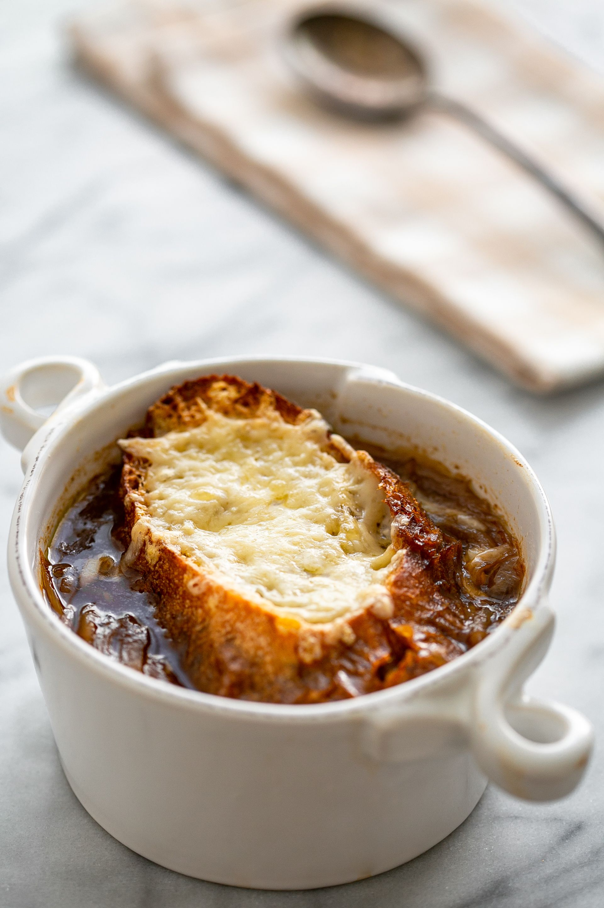

French Onion Soup

French onion soup served with a piece of baguette and gooey cheese
This delicious soup takes around 80 minutes to prepare and it is not too difficult to make.
Ingredients
- 6 onions, peeled, and thinly sliced
- 4 tbsp olive oil
- 2 tbsp butter
- 1 tsp salt
- Kosher salt
- 2 cloves of garlic
- 8 cups beef stock or chicken stock, or combination
- 1/2 dry white wine
- 2 bay leaves
- 1 tbsp fresh thyme leaves
- 1/2 tsp ground black pepper
- 8 slices of baguette
- 1/2 cups grated Gruyere
- Sprinkling of parmesan
Cooking Instructions
- Carmelize onions for 15-20 minutes
- Deglaze pot with wine
- Add stock, bay leaves and thyme and cook for 30 minutes
- Toast baguettes with grated Gruyere and parmesan
- Serve soup with a cheesy baguette
Acknowledgment
Click here to see more about this recipe.
Back to home